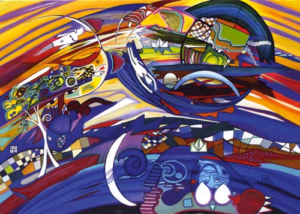

Details
Vernissage: 19. März 2010
Eröffnung: Univ. Prof. Dr. Karl DANTENDORFER (pro mente Wien)
Die Ausstellung war bis Ende Mai 2010 zu besichtigen.

Vernissage: 19. März 2010
Eröffnung: Univ. Prof. Dr. Karl DANTENDORFER (pro mente Wien)
Die Ausstellung war bis Ende Mai 2010 zu besichtigen.